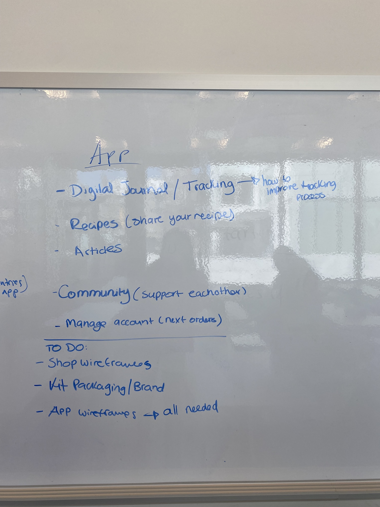
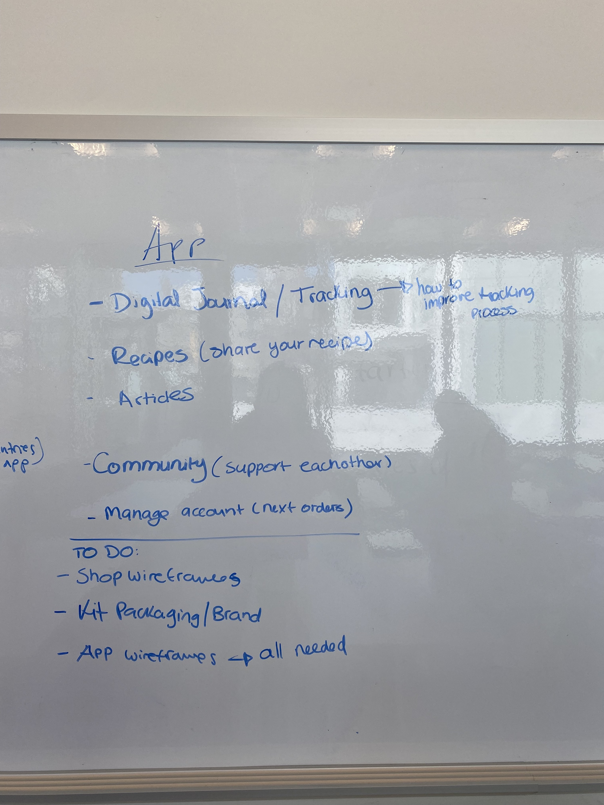

Teakit
Caffeine project
TeaKit offers an attractive and healthy solution for those dealing with caffeine overconsumption. The hardest part about quitting a bad habit is feeling you are alone in the journey. TeaKit provides incentive, a healthy replacement, and a network of constant support and motivation. The customizability of the experience and the product itself, makes it so that each individual can feel pride in building and maintaining their new healthy habit that is specific to them. With constantly evolving recipes and monthly changes to products, TeaKit allows the ritual to remain while improving their quality of life all around.
-
ROLE
UX Research
Branding
Product Management
App Ideation and Design
-
TEAM
Antonella Scarin
Victor Hugo
Nolan Boyd
-
CLIENT
Student project for Ideation Design course
-
TIME
Spring, 2024 (12 weeks)

FiNAL GOAL
Our top priority was to provide individuals with caffeine use disorder an alternative to coffee and other more stimulating caffeine sources. And promote healthier tea consumption habits while offering controlled caffeine intake.
DESiGN CHALLENGE
How might we bring the necessary awareness and support to these individuals who have the desire to either reduce caffeine intake or stop entirely? And how might we provide this in a way that results in more balanced energy levels?
INiTIAL RESEARCH
Stage 1: Observation
- Early morning and lunch are the time where people reach out for caffeine the most.
- Mostly big cups are ordered (like large americanos, large lattes,...)
- Caffeine as well as the environment, and social factor of a coffee shop is important. This supports the idea that interaction, getting out, socializing and others are important for energy not just caffeine.
- The tables are arranged mostly for 2 people. There are less tables for big groups.
- Some of the main reasons why people are there: to study or work either alone or with others. Majority have a coffee or some sort of beverage to have alone time. They are either with headphones in, reading, or scrolling on their phones.
- Those people who are alone and not working: stayed 10 - 15 min. Those people who are studying: at least 60 min.
- Big coffee chains have more seating options for bigger groups.
- People come for the purpose of chatting and eating.
- Most of the drinks are to go.
- Bigger groups staying 30 min, solos are buying to go.
General Notes
Specialized Coffee Shop
Coffee Chains
Stage 2: Journal
- The journals helped us to get a perspective on how coffee is consumed on a daily basis
- We gave the diary to 4 people of different ages and lifestyles which helped us to get a broad view on caffeine consumption
- We analyzed the results along with the interviews to come up with our research statements
Stage 3: Interviews
We conducted interviews with 5 individuals, within them we considered:
- Individuals who have coffee as their main source of caffeine, up to 8 cups daily.
- People who consider tea as their main source of caffeine, consuming it on a weekly basis
- People who consume pre-workout drinks and coffee as their main source of caffeine, consume it daily
- People who do not consume caffeine at all, had serious problems with it in the past
INSiGHT STATEMENTS
After conducting research about Caffeine consumption behaviour, collecting data and doing secondary research, we quickly realized users’ drop off points. These insights enabled us to determine how to approach caffeine consumption solution.
-
1.
Caffeine consumption tends to become part of an individuals routine becoming more habitual than intentional, particularly for those who are less active.
-
2.
Individuals who lead a very active and overall healthy lifestyle seem to use caffeine much more intentionally as a supplement in their busy routines in order to maintain high performance for their sports and exercise.
-
3.
There is a sense of immediacy, reliability, accessibility, and low risk in caffeines stimulating effects that result in many individuals reaching for it and in turn forming a habit.
-
4.
Journals and Interviews seemed to bring a new awareness to all participants and allowed a space for reflection and better understanding of their caffeine consumption and overall daily habits and energy levels. We aim to replicate that feeling with the next part of the project.
SOLUTiON
Our team came up with four comprehensive solutions for this design challenge.
-
1. Monthly Care Kits:
- Contains a month's supply of tea
- Variety of recipes for preparing each tea (hot, cold, etc.)
- Starter kit includes a travel mug, journal, and mindful recipes book
-
2. Variety Packs:
- Specialty mixed teas including matcha, chai, ginger, etc.
- Designed for different times of the day
- Controlled caffeine intake with diverse flavour profiles
-
3. App Features:
- Caffeine Intake Tracker: Monitor daily caffeine consumption
- Decaffeinated Self Journal: Document progress and experiences
- Alternative Energy Sources: Discover non-caffeine energy boosters
- Challenges and Goals: Participate in challenges to achieve personal milestones
- Recipes: Access a variety of tea recipes and preparation methods
- Community: Connect with others on similar journeys for support and inspiration
-
4. Promoting Healthy Habits:
- Incorporates mellowing teas for evening relaxation and better sleep
- Facilitates a shift to a balanced caffeine consumption pattern
MARKET RESEARCH
After we figured out the design solutions, we proceeded to visual research and competitor analysis.
Product - TeaKit Brand concept, app moodboard and Main Features
DESiGN SOLUTION
Ideation Sketch

 

HOW DOES TeaKit WORK?
1. Website
Users go to a landing page to take a quiz and shop our product.
2. Product
Users receive the product, but the most important piece is an invitation to “join the club” and download the app.
3. Mobile App
Users find tools and support to transition to mindful caffeine consumption. The app becomes an incentive to continue.